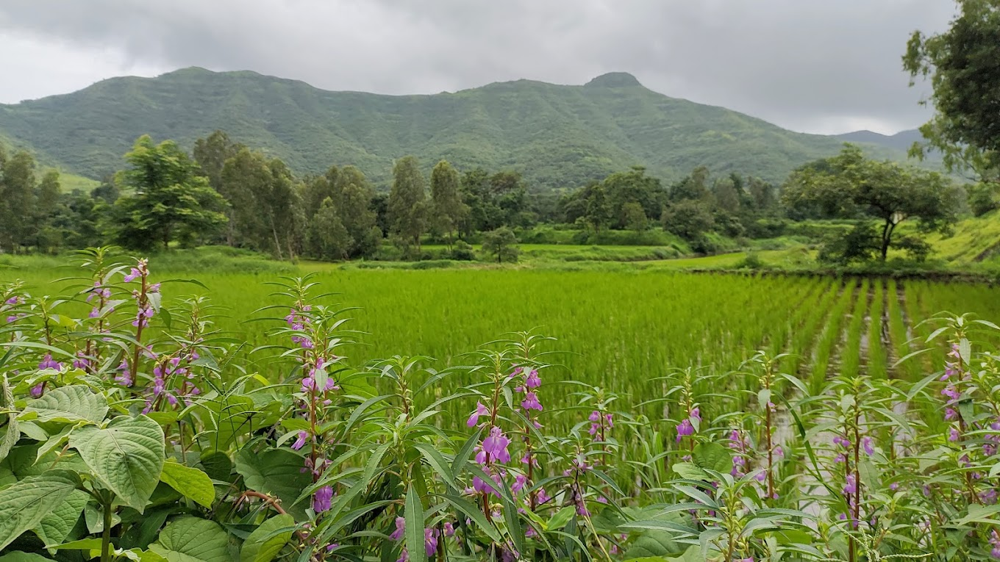

Activities
Trekking At Sinhagad

Sinhagad Fort - Trekking Quick Information
- Kalyan Darwaj and Pune Darwaja (historic gates).
- Tanaji Malusare Memorial.
- Scenic views of the Sahyadri mountains and Khadakwasla Dam.
- Trekking routes from Donje village (ideal for beginners and experts).
- Local snacks like Pithla Bhakri, Kanda Bhaji, and Limbu Sherbet.
- Difficulty Levels :Moderate
- Essentials: Comfortable shoes, water bottle, and snacks
Historical and Heritage Tours

- Guided tours to Sinhagad Fort with storytelling about its history and legends.
- Explore other nearby historic landmarks, like temples or old settlements.
Agro-Tourism
- Farm Visits:
- Visitors can explore nearby farms to understand organic and traditional farming practices.
- Activities like plowing, sowing, and harvesting create an immersive rural experience.
- Seasonal Activities:
- Include activities like mango picking (in summer) or rice planting (in monsoon), allowing Visitors to connect with the land.